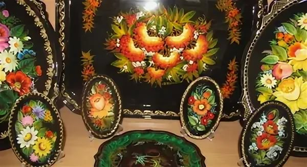
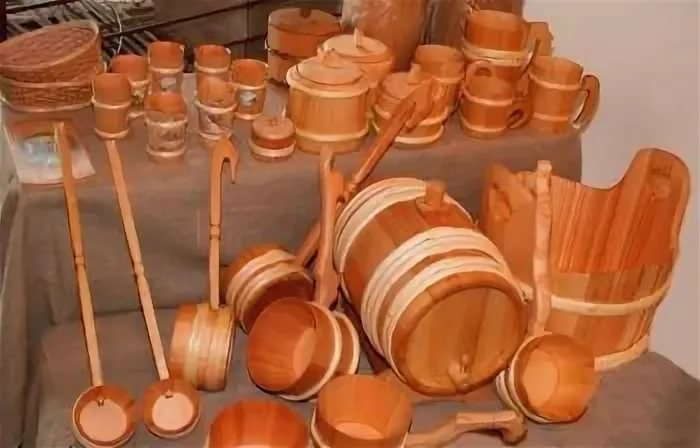
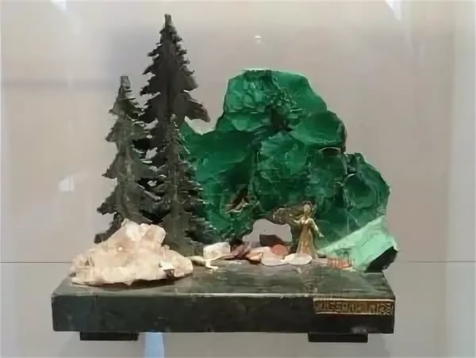
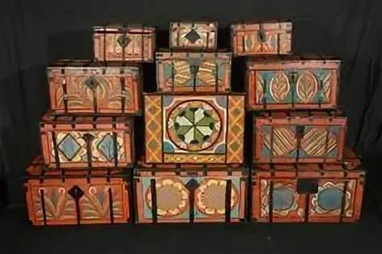
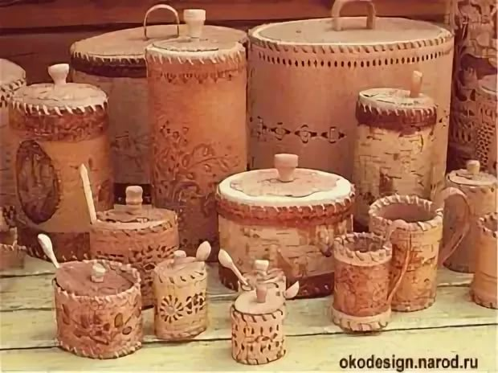

Народные художественные промыслы России — неотъемлемая часть отечественной культуры. В них воплощен многовековой опыт эстетического восприятия мира, обращенный в будущее, сохранены глубокие художественные традиции, отражающие самобытность культур многонациональной Российской Федерации. Художественные промыслы являются одновременно и отраслью промышленности, и областью народного творчества.
Тагильские народные промыслы
Подносный промысел
Нижний Тагил - крупнейший промышленный центр Урала является родиной русского расписного железного подноса. Искусство уральской лаковой росписи, зародившееся в 40-е годы 18 столетия и активно развивающееся в 21 веке, обогатило художественную культуру России. В нем воплотился сплав высокого профессионального мастерства, кропотливого труда мастеров по металлу, стремление к прекрасному и талант народных живописцев.Отсчет истории его идет от условной даты - 1746 год, к которой относят самые ранние архивные сведения о железных подносах с художественной отделкой. Тагильский металл с маркой «Старый соболь» стал известен во всем мире. Его качество, пластичность в обработке высоко ценились, уральские умельцы искали различные формы применения и демонстрации этих качеств тагильского железа. Тут следует вспомнить, что тогда еще не было листопрокатного производства, и металл обрабатывался методом ковки - одним из самых сложных и трудоемких способов металлообработки. Минимальная толщина, удивительно ровнейшая поверхность, возможность декоративной обработки бортов подноса, а также столиков и сундуков, все это требовало высокого качества металла и виртуозного мастерства металлургов, кузнецов, слесарей и лакировщиков.
Бондарный промысел
Бондарь – профессия и одновременно старинное ремесло по производству крупной деревянной тары, бочек, кадушек. Для того чтобы заниматься таким ремеслом, нужна немалая физическая сила и большое мастерство. Именно поэтому за всю историю не было ни одной женщины-бондаря. Изготовление бочек доверяли только настоящим мастерам, так как только они смогут создать изделие высокого качества. А оно очень ценится. С тех пор как люди придумали заготавливать продукты на длительный срок хранения, хорошие бочки стали необходимостью в быту. Не менее они важны и на винодельнях и виноградниках. В дубовых бочках настаиваются и хранятся такие благородные напитки, как вино, коньяк, бренди. Если ремесленник правильно выбрал и подготовил дерево, то напиток не окислится, не испарится и сможет забродить должным образом. Бондарь — профессия, история которой уходит в века.
Камнерезный промысел
На Урале художественная резьба по камню зародилась в 18 веке как сопутствующее металлообработке ремесло, а уже к концу века по всему Уралу работало множество частных мастерских. Сырьём для камнерезов были местные камни (яшма, малахит, агат, кварц, сердолик, родонит, мрамор и другие), которые находили местные жители во время разведки новых месторождений руды. К 19 веку сложился определённый стиль Уральской резьбы по камню, появляется постоянный канон по изготовлению элементов в композициях. Например, листья и корешки делались из змеевика, златоустовской яшмы, офита, реже — из малахита. Каждой ягоде соответствовал свой камень: чёрной смородине — тёмный агат, белой смородине — горный хрусталь, княженике — малиновый шерл (турмалин), малине — селенит и орлец (родонит), клубнике и землянике — сургучная яшма, крыжовнику — сердолик, морошке — янтарь или обожжённый красный коралл, винограду — аметист и иногда дымчатый кварц; малина, крыжовник и виноград делались из цельного камня, клубнику и землянику — тоже, но с тщательной разгранкой каждого зёрнышка; княженика — из мелких, соединенных мастикой шариков, белая смородина — из склеенных между собой двух полусфер с вырезанными внутри желобками.
Сундучный промысел
До 80-х годов, 19 века, пока не набрали силу Криворожье с Донбассом, арсеналом и главным «железным цехом» нашей страны был Урал. Без металла Урала не могла обойтись ни одна отрасль народного хозяйства, тем более быт людей. Со знаменитым железом связано и зарождение в старейшем горнозаводском центре Урала – Невьянске, широко известного в прошлом сундучного промысла. Металл для Невьянских сундуков был тем, же чем оправа для камней – самоцветов. Он облагораживал дерево, придавал изделиям не только необходимую прочность, но и привлекательный внешний вид. Чтобы изготовить сундук, требовались усилия мастеров разных специальностей, иногда число их доходило до семи: одни делали деревянные ящики, другие – металлические замки, третьи – ручки, петли, четвертые – подготавливали железо и жесть, лакировали его, печатники и чеканщики украшали листы узорами. Сундуки на деревянной основе делали из сосновых, а на стенки и крышку в определенной последовательности набивали металлическую обшивку: грани укрепляли прочеканенными или расписанными полосами, на передней стенке врезали замок, к боковым прикрепляли скобы – ручки, расписанные цветами или сценками, металлические листы, представляющие основу украшения сундука.
Бурачный промысел
Бурак – сосуд цилиндрической формы, изготовленный из бересты, берёзовой коры. Другое название бурака – туес. Туеса в прошлом изготавливались и применялись в крестьянском хозяйстве на всей территории Русского Севера, в Поволжье и Сибири. Туеса применяли для самых разных нужд: хранения продуктов, мочения ягод, соления грибов, огурцов, рыбы. Размеры туесов были различны – самыми маленькими пользовались рыбаки, хранили в них наживку, в самых больших мог спрятаться человек. Бурачный промысел возник в Нижней Салде из потребности населения в посуде. На Урале важнейшим ресурсом является лес. На протяжении долгого времени люди изучали свойства древесины разных пород. Одним из самых популярных материалов для изготовления предметов домашнего обихода стала береста. Уникальные свойства бересты- верхнего слоя березовой коры – давно известны. Этот природный материал отличается своей эластичностью, легкостью и достаточной прочностью. Кроме того, береста состоит из множества тончайших слоев, которые не пропускают воздух и влагу. Материал обладает термодинамическими и бактерицидными свойствами. Молоко в берестяном бураке хранится гораздо дольше, нежели в какой-либо другой посуде. А выпечка может оставаться мягкой и свежей почти неделю.
Известность народных промыслов в Нижнем Тагиле - опрос жителей
- Подносный промысел - 85%
- Камнерезный промысел - 70%
- Сундучный промысел - 15%
- Бурачный промысел - 15%
- Бондарный промысел - 5%
* в ответах могло быть несколько промыслов